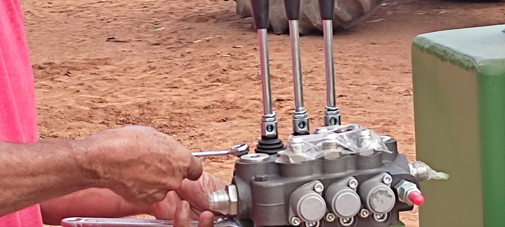

Fique por dentro das novidades e dicas do agronegócio.

15 de Junho, 2024
Como Escolher o Implemento Ideal para Sua Propriedade
A escolha do implemento agrícola correto é uma das decisões mais críticas para garantir a eficiência e a produtividade de uma propriedade rural. Um equipamento inadequado pode não apenas comprometer a qualidade do trabalho, mas também gerar custos desnecessários com manutenção e consumo de combustível.
O segundo fator crucial é o tamanho da propriedade. Para pequenas áreas, implementos menores e mais ágeis podem ser suficientes e mais econômicos. Já para grandes extensões, é fundamental investir em equipamentos de maior porte e capacidade, que otimizem o tempo e cubram mais hectares por hora.

10 de Junho, 2024
Manutenção Preventiva: Economize e Prolongue a Vida Útil
No campo, uma máquina parada é sinônimo de prejuízo. A manutenção preventiva de implementos agrícolas é a estratégia mais inteligente para evitar quebras inesperadas. Ao contrário da manutenção corretiva, que age apenas depois que o problema surgiu, a preventiva foca em inspeções periódicas e na substituição de peças desgastadas antes que elas falhem.
Um plano de manutenção bem estruturado começa com a limpeza diária dos equipamentos e a verificação dos níveis de óleo e fluidos, seguindo as recomendações do manual do fabricante. Investir algumas horas por semana em manutenção preventiva pode economizar milhares de reais em reparos complexos e prolongar significativamente a vida útil do seu equipamento.

5 de Junho, 2024
Tendências Tecnológicas no Agronegócio 2024
A agricultura de precisão deixou de ser uma promessa para se tornar uma realidade indispensável no campo. O uso de drones, por exemplo, vai muito além de belas imagens aéreas. Equipados com sensores multiespectrais, eles são capazes de identificar falhas no plantio, detectar pragas e doenças em estágios iniciais e avaliar a saúde da lavoura com uma precisão que o olho humano não alcança.
Outra grande tendência é a popularização de tratores e colheitadeiras autônomas ou guiadas por GPS (piloto automático). Essa tecnologia reduz a fadiga do operador, permite trabalhos noturnos com a mesma precisão e garante um paralelismo perfeito entre as linhas de plantio, evitando sobreposições ou falhas.